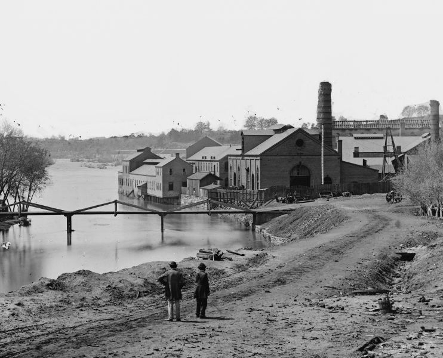

|
Tredegar Iron Works, located in Richmond, Virginia, was the
only first-class iron foundry and rolling mill in the
Confederacy at the outbreak of the Civil War. The only
manufacturing plant in the South capable of producing iron
plating, heavy artillery and major ordnance, it played a
critical role in providing the materiel needed for the
Confederate war effort, especially in the early years of the
war.
Tredegar was founded in 1837 by Francis B. Deane. Deane
was a poor administrator, and within a decade ownership of
the plant had passed to the hands of West Point graduate
Joseph Reid Anderson. Anderson proved to be a more able
manager than Deane, and by 1850 Tredegar was thriving. When
the Civil War broke out, Anderson immediately ceased doing
|

Tredegar Iron Works was one of the Confederacy's
most important assets.
|
business with his northern customers, and he offered to
lease the plant to the Confederate government. The Davis
administration refused, and instead signed several long-term
contracts for Tredegar's services. For the first two years
of the war, Tredegar supplied a substantial portion of the
Confederacy's large guns and major ordnance. The iron
plating used on the Confederacy's first ironclad, the
Virginia, was created at Tredegar. The plant also worked on
experimental projects, including torpedoes and a submarine.
As the war went on, Tredegar was beset by a series of
problems. The raw materials that the plant needed were in
short supply, even at the outset of the war. The problem
became much worse as the Confederate government opened its
own iron foundries in other parts of the South. As a result,
Tredegar rarely operated at anything more than a third of
its capacity after 1861. The plant also suffered from
cash-flow problems, as payment for services was often late
or not received at all. In fact, to keep afloat financially,
Anderson was compelled to engage in blockade running. Labor
shortages also had a negative impact on Tredegar's
operations, as an increasingly large portion of the plant's
labor force was compelled to take up arms for the
Confederacy. By the end of the war, Tredegar had lost its
reputation for quality, and Confederate chief of ordinance
Josiah Gorgas openly complained of his dissatisfaction with
the work being done there.
Once the war was over, Anderson moved quickly to keep
Tredegar in business. He re-established his contacts in the
North, and he met privately with President Andrew Johnson to
arrange a pardon for himself and his partners. Tredegar's
time as a dominant player in southern industry was over,
however. Steel was becoming America's metal of choice, and
Tredegar did not have the money to convert its equipment to
steel production, particularly after taking a huge financial
loss during the Panic of 1873. Tredegar scaled back its
operations, finally closing its doors in 1958.
Source: Joan Waugh, ed., Facts on File Encyclopedia of American
History: Civil War and Reconstruction, 1856 to 1869 (New York: Facts on
File, 2003), 356.
|